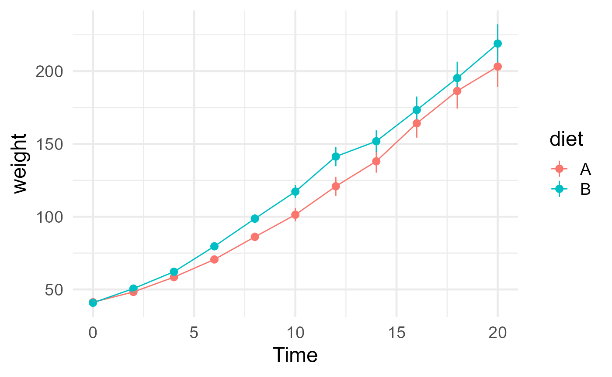
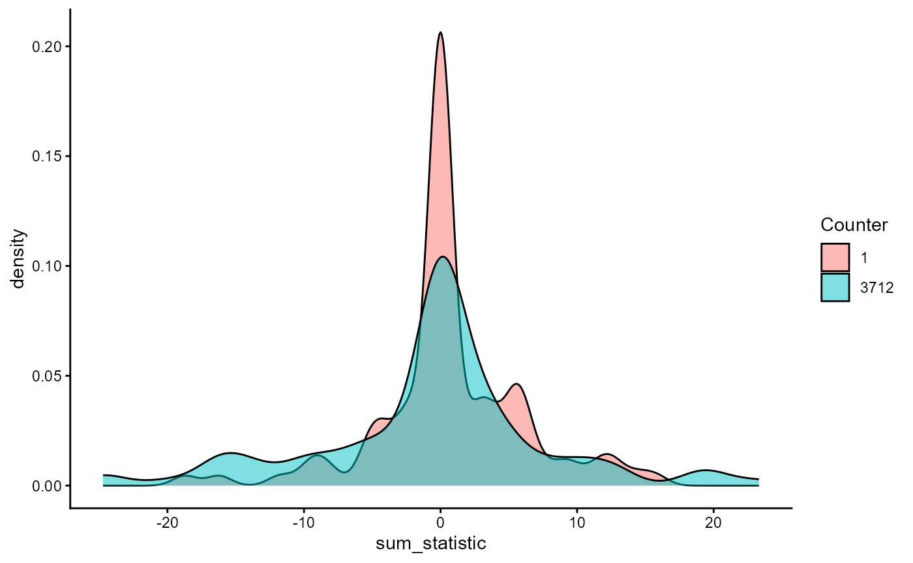
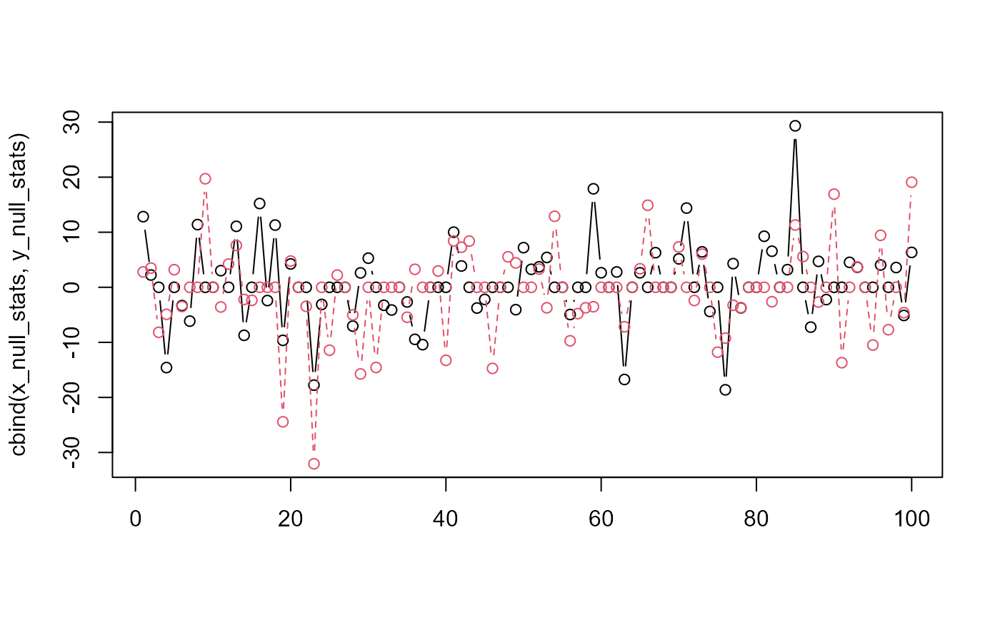

This vignette showcases using RNG seed and counter state to guarantee the reproducibility of results from jlmerclusterperm.
See more tutorials and vignettes on the Articles page.
Setup
library(jlmerclusterperm)
jlmerclusterperm_setup(verbose = FALSE)Minimal example data:
library(dplyr, warn.conflicts = FALSE)
library(ggplot2)
chickweights <- as_tibble(ChickWeight) %>%
mutate(diet = forcats::fct_collapse(Diet, A = c(1, 3), B = c(2, 4))) %>%
filter(Time %in% 0:20)
ggplot(chickweights, aes(Time, weight, color = diet)) +
stat_summary(fun.args = list(mult = 1.96)) +
stat_summary(geom = "line") +
theme_minimal(base_size = 18)
The jlmer specification object used for this showcase:
jlmer_spec <- make_jlmer_spec(
formula = weight ~ diet + (1 | Chick), data = chickweights,
subject = "Chick", time = "Time"
)
jlmer_spec
#> ── jlmer specification ───────────────────────────────────────── <jlmer_spec> ──
#> Formula: weight ~ 1 + dietB + (1 | Chick)
#> Predictors:
#> diet: dietB
#> Groupings:
#> Subject: Chick
#> Trial:
#> Time: Time
#> Data:
#> # A tibble: 533 × 4
#> weight dietB Chick Time
#> <dbl> <dbl> <chr> <dbl>
#> 1 42 0 1 0
#> 2 51 0 1 2
#> 3 59 0 1 4
#> # ℹ 530 more rows
#> ────────────────────────────────────────────────────────────────────────────────RNG seed vs. counter
Because CPA is powered by bootstrapping, it is inherently a
stochastic procedure. Reproducibility is guaranteed for
clusterpermute() calls ran with the same
seed and counter values. These are
both properties of the Julia random number generator used by
jlmerclusterperm and refer to two slightly different
concepts:
The seed is conceptually equivalent to the same “seed” as talked about in R, as in
set.seed(). The seed is used in the RNG’s initialization, locking it into a specific state that persists for the session. In jlmerclusterperm, the default seed is1and is primarily controlled viaoptions("jlmerclusterperm.seed")which must be set before callingjlmerclusterperm_setup().The counter initializes to
0and increments by some value every time the RNG is consumed to produce a random number. There is no equivalent concept in base R, though it’s a more handy and intuitive way of interfacing with the RNG’s state in an interactive session. The counter can be manipulated via the functionsreset_rng_state(),set_rng_state(), andget_rng_state().
The rest of this vignette will showcase interacting with the counter state, as it is more useful in practice.
Behavior of RNG counter
At the start of a fresh session, the counter is initialized at zero. And because we did not specify the seed, it’s at one:
get_rng_state()
#> [1] 0
get_rng_seed()
#> [1] 1We start with a simple clusterpermute() with 100
simulations. The reproducibility profile of this run has a seed of
1 and a counter of 0:
CPA_1_0 <- clusterpermute(jlmer_spec, threshold = 1, nsim = 100, progress = FALSE)
CPA_1_0
#> $null_cluster_dists
#> ── Null cluster-mass distribution (t > 1) ────────────── <null_cluster_dists> ──
#> dietB (n = 100)
#> Mean (SD): 0.724 (5.54)
#> Coverage intervals: 95% [-10.847, 12.592]
#> ────────────────────────────────────────────────────────────────────────────────
#>
#> $empirical_clusters
#> ── Empirical clusters (t > 1) ────────────────────────── <empirical_clusters> ──
#> dietB
#> [2, 14]: 18.231 (p=0.0198)
#> ────────────────────────────────────────────────────────────────────────────────After this run, the counter is now incremented to 3712:
get_rng_state()
#> [1] 3712The same call to clusterpermute() now runs with this new
counter value, and it produces a different result. Again, this is
expected given the stochastic nature of the CPA (and thus the need to
run tens of thousands of simulations when reporting results):
CPA_1_3712 <- clusterpermute(jlmer_spec, threshold = 1, nsim = 100, progress = FALSE)
CPA_1_3712
#> $null_cluster_dists
#> ── Null cluster-mass distribution (t > 1) ────────────── <null_cluster_dists> ──
#> dietB (n = 100)
#> Mean (SD): -0.618 (8.51)
#> Coverage intervals: 95% [-18.328, 19.076]
#> ────────────────────────────────────────────────────────────────────────────────
#>
#> $empirical_clusters
#> ── Empirical clusters (t > 1) ────────────────────────── <empirical_clusters> ──
#> dietB
#> [2, 14]: 18.231 (p=0.0792)
#> ────────────────────────────────────────────────────────────────────────────────This second run also increments the counter state, but note how it’s not exactly by the same amount (this is not possible to predict):
get_rng_state()
#> [1] 7427The difference between these two runs is specifically in the null distribution of the cluster-mass statistics. Both 100-simulation samples are drawn share the same underlying (null) distribution, though they are not identical to one another (they rarely are).
ggplot(mapping = aes(sum_statistic)) +
geom_density(
aes(fill = "1"),
alpha = .5,
data = tidy(CPA_1_0$null_cluster_dists)
) +
geom_density(
aes(fill = "3712"),
alpha = .5,
data = tidy(CPA_1_3712$null_cluster_dists)
) +
guides(fill = guide_legend("Counter")) +
theme_classic()
Manipulating RNG counter
Using set_rng_counter(), it is possible to reproduce a
prior run. For example, to reproduce the second
clusterpermute() call, we set the counter back to 3712 with
set_rng_state():
set_rng_state(3712)
get_rng_state()
#> [1] 3712The results of the subsequent run from this counter state is identical to the previous run:
identical(
CPA_1_3712,
clusterpermute(jlmer_spec, threshold = 1, nsim = 100, progress = FALSE)
)
#> [1] TRUETo reproduce the first CPA ran with counter at 0, we can
again use set_rng_state() or simply use
reset_rng_state() which is an alias for
set_rng_state(0):
reset_rng_state()
get_rng_state()
#> [1] 0
identical(
CPA_1_0,
clusterpermute(jlmer_spec, threshold = 1, nsim = 100, progress = FALSE)
)
#> [1] TRUEThis behavior can be observed at the specific step of simulating the
null distribution as well. The function corresponding to this step is
permute_timewise_statistics() and we run 100 simulations
for this step with counter at zero:
reset_rng_state()
get_rng_state()
#> [1] 0
null_statistics <- permute_timewise_statistics(jlmer_spec, nsim = 100)
get_rng_state()
#> [1] 3712Running the cluster detection algorithm over the result using
extract_null_cluster_dists() returns a null cluster-mass
distribution which is identical to that from CPA_1_0:
null_cluster_dists <- extract_null_cluster_dists(null_statistics, threshold = 1)
null_cluster_dists
#> ── Null cluster-mass distribution (t > 1) ────────────── <null_cluster_dists> ──
#> dietB (n = 100)
#> Mean (SD): 0.724 (5.54)
#> Coverage intervals: 95% [-10.847, 12.592]
#> ────────────────────────────────────────────────────────────────────────────────
identical(null_cluster_dists, CPA_1_0$null_cluster_dists)
#> [1] TRUETechnical details and notes
The Julia back-end uses a thread-safe, counter-based RNG called Threefry
(specifically, Random123.Threefry2x) which comes from the
Random123.jl
Julia library as an adaptation of the original algorithm developed by Salmon, Moraes, Dror,
and Shaw (2011). The RNG is initialized with a “rounds” value of 20,
which is also the default. Threefry is used for its speed and stability
across Julia versions.
Additionally, as noted earlier, the RNG initializes with an explicit
seed of 1. This behavior is different than in the case of
R, where a random seed is chosen for the user for every new session. The
consequence is that in the absence of explicit seeding via
options("jlmerclusterperm.seed"), the first run of every
new session (i.e., runs with counter value of zero) will be
identical.
# Restart Julia session
jlmerclusterperm_setup(restart = TRUE, verbose = FALSE)
# RNG seed is again 1
get_rng_seed()
#> [1] 1
# So results of the first CPA of the session (with counter = 0) is the same
get_rng_state()
#> [1] 0
identical(
CPA_1_0,
clusterpermute(jlmer_spec, threshold = 1, nsim = 100, progress = FALSE)
)
#> [1] TRUEGiven the interface to the RNG counter, there are not many unique
advantages to using a different seed over manipulating the RNG counter.
But an interface to RNG seed is also provided via
set_rng_seed() and get_rng_seed().
Lastly, please be aware that changing the seed for the R
session (e.g., via set.seed()) has no effect on
jlmerclusterperm functions powered by the Julia
back-end.
Miscellaneous
You may be wondering whether two CPAs that overlap in the range of counter values also share overlapping samples from the null. This is actually not the case in practice because of how shuffling for the CPA is implemented:
# 100 simulations of timewise statistics
## First CPA using counter at 1
set_rng_state(1)
x <- permute_timewise_statistics(jlmer_spec, nsim = 100)
## Second CPA using counter at 2
set_rng_state(2)
y <- permute_timewise_statistics(jlmer_spec, nsim = 100)
# The null cluster-mass statistics
x_null <- extract_null_cluster_dists(x, threshold = 1)
x_null_stats <- tidy(x_null)$sum_statistic
y_null <- extract_null_cluster_dists(y, threshold = 1)
y_null_stats <- tidy(y_null)$sum_statistic
# Relationship between two CPAs with similar initial counters
matplot(cbind(x_null_stats, y_null_stats), type = "b", pch = 1)
The two colored lines represent two 100-simulation bootstrap permutations that differ in the initial RNG counter by a value of 1. The point is that the shape of the two lines look very different - one is not just the shifted form of another.
For more formal investigations (e.g., when simulating power for CPA), it’s of course best practice to generate random seeds. The counter is more of a convenience that balances interactivity with reproducibility.